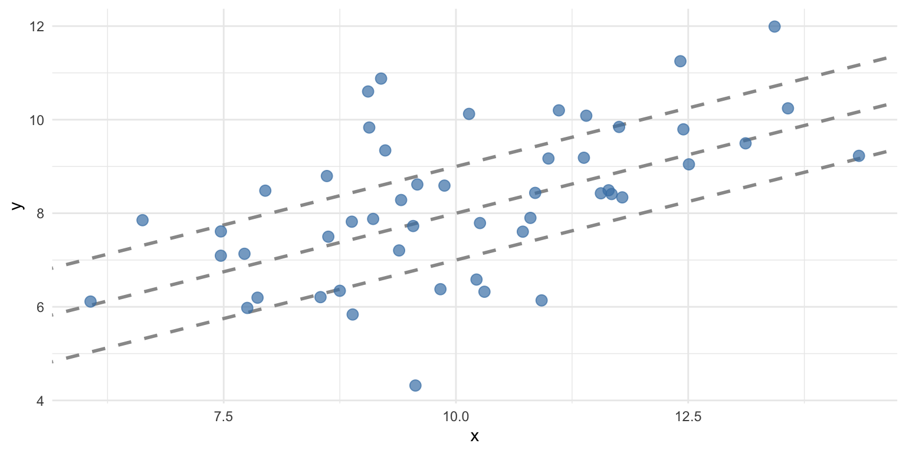
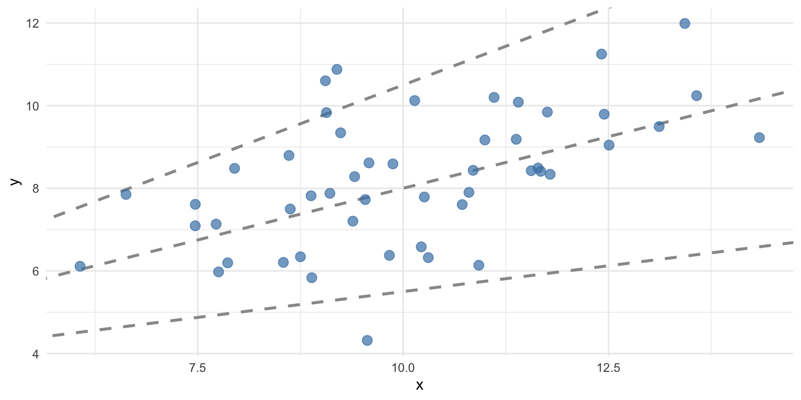
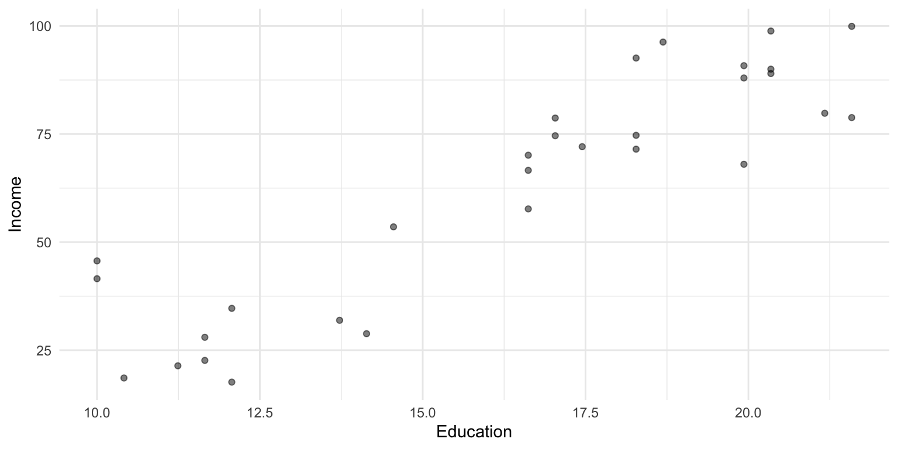
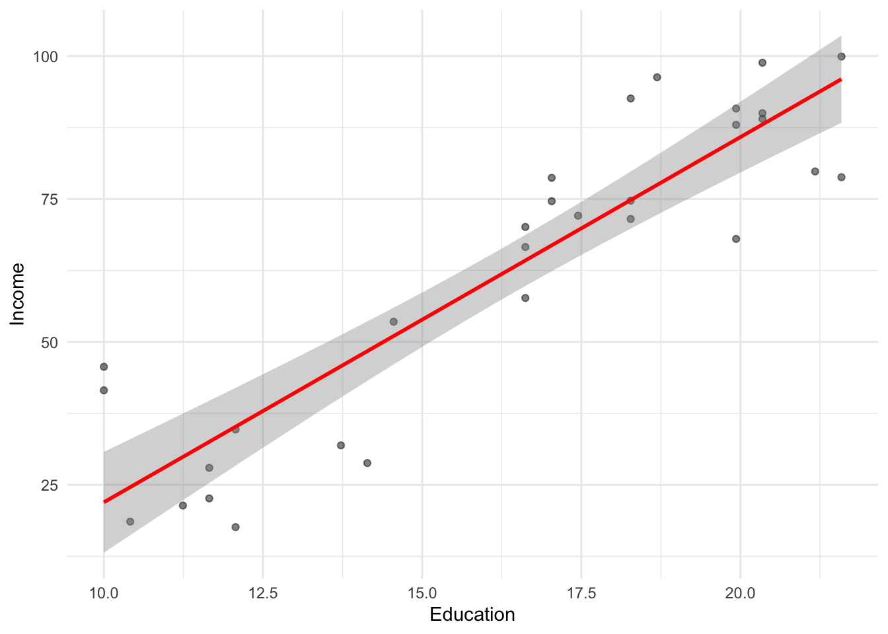
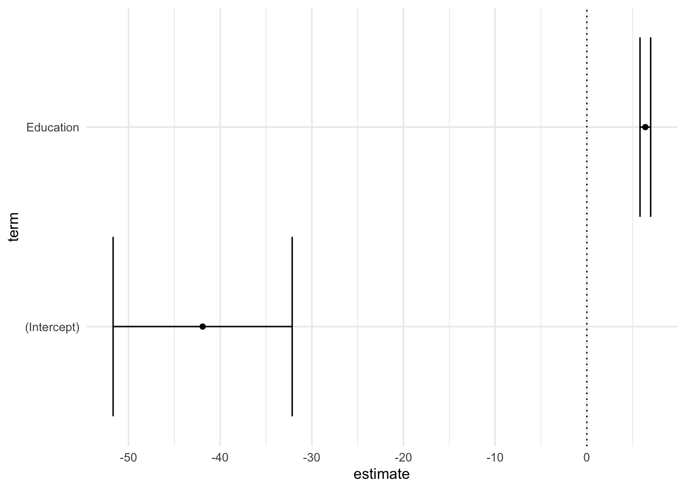
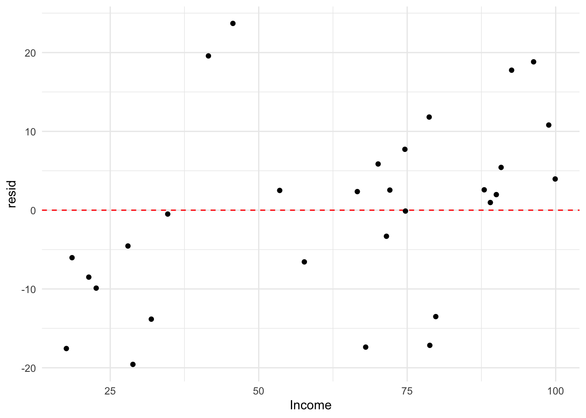

── Attaching core tidyverse packages ──────────────────────── tidyverse 2.0.0 ──
✔ dplyr 1.1.4 ✔ readr 2.1.5
✔ forcats 1.0.0 ✔ stringr 1.5.1
✔ ggplot2 3.5.2 ✔ tibble 3.2.1
✔ lubridate 1.9.4 ✔ tidyr 1.3.1
✔ purrr 1.0.4
── Conflicts ────────────────────────────────────────── tidyverse_conflicts() ──
✖ dplyr::filter() masks stats::filter()
✖ dplyr::lag() masks stats::lag()
ℹ Use the conflicted package (<http://conflicted.r-lib.org/>) to force all conflicts to become errorsLinear regression in R
Goals of the lecture
- Foundations of statistical modeling.
- Basic goals and assumptions of univariate linear regression.
- Measuring error.
- Linear regression in R with
lm.- Interpreting
lmmodel outputs: coefficients, p-values, and \(R^2\).
- Interpreting
Part 1: Modeling
What are “models”, and why should we build them?
From descriptions to models
A statistical model is a mathematical model representing a data-generating process.
- So far, we’ve focused on describing and visualizing data.
- But often, we want to model our data.
- Typically involves learning some function mapping \(X\) to \(Y\).
- All models are wrong, but some are useful.
Why models?
Statistical models help us understand our data, and also predict new data.
- Prediction: Try to predict/estimate unseen values of \(Y\), given \(X\).
- Inference: Try to understand how and why \(X\) relates to \(Y\), test hypotheses, and more.
Models encode functions
A statistical model often represents a function mapping from \(X\) (inputs) to \(Y\) (outputs).
\(Y = \beta X + \epsilon\)
- \(Y\): What we want to predict.
- \(X\): The features we’re using to predict \(Y\).
- \(\beta\): The coefficients (or weights) mapping \(X\) to \(Y\).
- \(\epsilon\): Residual variance or “error”.
Models aren’t perfect
No model is perfect; all models have some amount of prediction error, typically called residuals or error.

Models have trade-offs
In general, there is often a trade-off between the flexibility of a model and the interpretability of that model.
- More flexible models can learn more complex functions/relationships, but they are often harder to interpret.
- They’re also more likely to **overfitt*.
- Less flexible models (e.g., linear regression) have higher bias, but are often easier to interpret, and less likely to overfit.
Part 2: Univariate linear regression
Linear equation, basic premise, key assumptions.
Linear regression: basics
The goal of linear regression is to find the line of best fit between some variable(s) \(X\) and the continuous dependent variable \(Y\).
- Assuming a linear relationship between \(X\) and \(Y\)…
- …find parameters \(\beta\) that minimize prediction error.
- Allows for many predictors, but we’ll start with univariate regression: a *single predictor (variable).
The line of best fit
Given some bivariate data, there are many possible lines we could draw. Each line is defined by the linear equation:
\(Y = \beta_1 X_1 + \beta_0\)
- \(\beta_0\): Intercept.
- \(\beta_1\): Slope for \(X_1\).
The best-fitting line (pt. 1)
To illustrate this, let’s simulate some data:
The best-fitting line (pt. 2)
Now let’s plot different lines with the same slope but different intercepts.
# Create the plot
ggplot(df, aes(x = x, y = y)) +
# Add several "possible" lines
geom_abline(intercept = 2, slope = 0.5, color = "gray60", linetype = "dashed", linewidth = 1) +
geom_abline(intercept = 3, slope = 0.5, color = "gray60", linetype = "dashed", linewidth = 1) +
geom_abline(intercept = 4, slope = 0.5, color = "gray60", linetype = "dashed", linewidth = 1) +
# Add data points
geom_point(color = "steelblue", size = 3, alpha = 0.7) +
theme_minimal() 
The best-fitting line (pt. 3)
We can also try the same intercept but different slopes.
# Create the plot
ggplot(df, aes(x = x, y = y)) +
# Add several "possible" lines
geom_abline(intercept = 3, slope = 0.75, color = "gray60", linetype = "dashed", linewidth = 1) +
geom_abline(intercept = 3, slope = 0.5, color = "gray60", linetype = "dashed", linewidth = 1) +
geom_abline(intercept = 3, slope = 0.25, color = "gray60", linetype = "dashed", linewidth = 1) +
# Add data points
geom_point(color = "steelblue", size = 3, alpha = 0.7) +
theme_minimal() 
Some lines are better than others
The line of best fit minimizes the residual error, i.e., the difference between the predictions (the line) and the actual values.
\(RSS = \sum_{i=1}^{N} (\hat{y_i} - y_i^2)\)
- For each data point \(i\), subtract the actual value \(y_i\) from the predicted value \(\hat{y_i}\).
- Then, square that difference.
- Then, sum all those squared differences.
MSE: Mean-squared error
The mean-squared error (MSE) is the average squared error (as opposed to the sum).
- Calculate \(RSS\).
- Then, divide by \(N\).
- Note that RMSE is the root of MSE.
Calculating MSE for a line
We can compare the MSE for two different lines for the same data.
Standard error of the estimate
The standard error of the estimate is a measure of the expected prediction error, i.e., how much your predictions are “wrong” on average.
\(S_{Y|X} = \sqrt{\frac{RSS}{n-2}}\)
- How much, on average, do we expect \(\hat{Y}\) to deviate from \(Y\)?
- A smaller number means a better fit.
Calculating standard error of the estimate
We can calculate standard error of the estimate:
Evaluating with R-squared
The \(R^2\), or coefficient of determination, measures the proportion of variance in \(Y\) explained by the model.
\(R^2 = 1 - \frac{RSS}{SS_Y}\)
Where \(SS_Y\) is the sum of squared error in \(Y\).
Decomposing \(R^2\)
\(R^2 = 1 - \frac{RSS}{SS_Y}\)
- \(RSS\) refers to the unexplained (residual) variance in \(Y\) from the model.
- \(SS_Y\) is the total variance in \(Y\) (i.e., before even fitting the model).
- Thus, \(\frac{RSS}{SS_Y}\) captures the proportion of unexplained variance by the model.
- If \(\frac{RSS}{SS_Y} = 1\), the model has explained no variance.
- If \(\frac{RSS}{SS_Y} = 0\), the model has explained all variance.
- And \(1 - \frac{RSS}{SS_Y}\) captures the proportion of explained variance.
Key assumptions of linear regression
Ordinary least squares (OLS) regression has a few key assumptions.
| Assumption | What it means | Why it matters |
|---|---|---|
| Linearity | The relationship between \(X\) and \(Y\) is linear | OLS fits a straight line, so if the true relationship is curved, predictions will be systematically biased |
| Independence | The observations are independent of each other | Dependent observations (e.g., repeated measures, time series) violate the assumption that errors are uncorrelated, leading to underestimated standard errors and invalid p-values |
| Homoscedasticity | The variance of residuals is constant across all levels of \(X\) (equal spread) | If variance changes with \(X\) (heteroscedasticity), standard errors will be incorrect: some coefficients appear more/less significant than they truly are |
| Normality of residuals | The errors are approximately normally distributed | Needed for valid confidence intervals and hypothesis tests (p-values). Less critical with large samples due to the Central Limit Theorem. |
Interim summary
- In statistical modeling, we aim to construct models of our data.
- Linear regression is a specific (high-bias) model.
- The goal of linear regression is to identify the best-fitting line for our data, i.e., to reduce the residual sum of squares (RSS).
- Linear regression rests on a few assumptions about the data (more on this in an upcoming lecture).
Part 3: Linear regression in R
Using and interpreting fit lm models, using broom.
The lm function
A linear model can be fit using the
lmfunction.
- Supply a formula (i.e.,
y ~ x). - Supply the data (i.e., a dataframe).
- Usage:
lm(data = df_name, y ~ x).- Where
yandxare columns indf_name.
- Where
Loading a dataset
To illustrate linear regression in R, we’ll work with a sample dataset.
Rows: 30 Columns: 3
── Column specification ────────────────────────────────────────────────────────
Delimiter: ","
dbl (3): Education, Seniority, Income
ℹ Use `spec()` to retrieve the full column specification for this data.
ℹ Specify the column types or set `show_col_types = FALSE` to quiet this message.
Visualizing the model fit
As we discussed before, geom_smooth(method = "lm") can be used to plot a regression line over your data.
df_income %>%
ggplot(aes(x = Education, y = Income)) +
geom_point(alpha = .5) +
geom_smooth(method = "lm", se = TRUE, color = "red") +
theme_minimal()`geom_smooth()` using formula = 'y ~ x'
Fitting an lm model
Calling summary on a fit lm model object returns information about the coefficients and the overall model fit.
Call:
lm(formula = Income ~ Education, data = df_income)
Residuals:
Min 1Q Median 3Q Max
-19.568 -8.012 1.474 5.754 23.701
Coefficients:
Estimate Std. Error t value Pr(>|t|)
(Intercept) -41.9166 9.7689 -4.291 0.000192 ***
Education 6.3872 0.5812 10.990 1.15e-11 ***
---
Signif. codes: 0 '***' 0.001 '**' 0.01 '*' 0.05 '.' 0.1 ' ' 1
Residual standard error: 11.93 on 28 degrees of freedom
Multiple R-squared: 0.8118, Adjusted R-squared: 0.8051
F-statistic: 120.8 on 1 and 28 DF, p-value: 1.151e-11Understanding summary output
Calling summary returns information about the coefficients of our model, as well as indicators of model fit.
Estimate Std. Error t value Pr(>|t|)
(Intercept) -41.916612 9.7689490 -4.290801 1.918257e-04
Education 6.387161 0.5811716 10.990148 1.150567e-11[1] 0.8118069- Estimate: fit intercept and slope coefficients.
- Std. Error: estimated standard error for those coefficients.
- t value: the t-statistic for those coefficients (slope / SE).
- p-value: the probability of obtaining a t-statistic that large assuming the null hypothesis.
- Multiple R-squared: proportion of variance in
yexplained byx. - Residual standard error: The standard error of the estimate.
Interpreting coefficients
There are a few relevant things to note about coefficients:
- The estimate tells you the direction (sign) and degree (magnitude) of the relationship.
- The p-value tells you whether a relationship of this size would be expected assuming there was no effect (i.e., the null hypothesis).
- More on this in an upcoming lecture!
The broom package
The broom package is also an easy way to quickly (and tidily) extract coefficient estimates.
Plotting coefficients
Once coefficients are in a dataframe, we can plot them using ggplot: a great way to visualize model fits!
df_coef %>%
ggplot(aes(x = term, y = estimate)) +
geom_point() +
geom_errorbar(aes(x = term, y = estimate,
ymin = estimate - std.error,
ymax = estimate + std.error)) +
coord_flip() +
geom_hline(yintercept = 0, linetype = "dotted") +
theme_minimal()
Overall model fit with glance
broom::glance() provides a tidy summary of overall model statistics.
broom::glance(mod)# A tibble: 1 × 12
r.squared adj.r.squared sigma statistic p.value df logLik AIC BIC
<dbl> <dbl> <dbl> <dbl> <dbl> <dbl> <dbl> <dbl> <dbl>
1 0.812 0.805 11.9 121. 1.15e-11 1 -116. 238. 242.
# ℹ 3 more variables: deviance <dbl>, df.residual <int>, nobs <int>r.squared: proportion of variance explainedadj.r.squared: adjusted for number of predictorssigma: residual standard errorp.value: p-value for the F-statistic
Using lm with %>%
If you like the %>% syntax, you can integrate lm into a series of pipe operations.
df_income %>%
## fit model
lm(Income ~ Education, data = .) %>%
## tidy into dataframe
broom::tidy()# A tibble: 2 × 5
term estimate std.error statistic p.value
<chr> <dbl> <dbl> <dbl> <dbl>
1 (Intercept) -41.9 9.77 -4.29 1.92e- 4
2 Education 6.39 0.581 11.0 1.15e-11Making predictions
Once we’ve fit a model, we can use it to make predictions for new data!
# Predict income for someone with 16 years of education
new_data <- data.frame(Education = 16)
predict(mod, newdata = new_data) 1
60.27797 # Or for multiple values
new_data <- data.frame(Education = c(12, 16, 20))
predict(mod, newdata = new_data, interval = "confidence") fit lwr upr
1 34.72932 27.86206 41.59659
2 60.27797 55.79413 64.76181
3 85.82661 79.62969 92.02353Visualizing residuals
We can also assess the residuals.
df_income %>%
mutate(resid = residuals(mod)) %>%
ggplot(aes(x = Income, y = resid)) +
geom_hline(yintercept = 0, linetype = "dashed", color = "red") +
geom_point() +
theme_minimal()
What about categorical predictors?
A categorical (or qualitative) variable takes on one of several discrete values.
df_stroop <- read_csv("https://raw.githubusercontent.com/seantrott/ucsd_css211_datasets/main/main/regression/stroop.csv")Rows: 48 Columns: 2
── Column specification ────────────────────────────────────────────────────────
Delimiter: ","
chr (1): Condition
dbl (1): RT
ℹ Use `spec()` to retrieve the full column specification for this data.
ℹ Specify the column types or set `show_col_types = FALSE` to quiet this message.head(df_stroop, 3)# A tibble: 3 × 2
Condition RT
<chr> <dbl>
1 Congruent 12.1
2 Congruent 16.8
3 Congruent 9.56Contrast coding
A common approach is to use the mean of one level (e.g., Congruent) as the intercept; the slope then represents the difference in means across those levels.
### Actual means
df_stroop %>%
group_by(Condition) %>%
summarise(mean_RT = mean(RT))# A tibble: 2 × 2
Condition mean_RT
<chr> <dbl>
1 Congruent 14.1
2 Incongruent 22.0### Fit coefficients
lm(data = df_stroop, RT ~ Condition)$coefficients (Intercept) ConditionIncongruent
14.051125 7.964792 Conclusion
- Linear regression is a foundational tool in your modeling toolbox.
- R simplifies fitting and interpreting regressions:
lm: fit the model.summary/broom::tidy/broom::glance: interpret the model coefficients and \(R^2\).predict: get predictions from the model.
- Next time, we’ll discuss advanced issues, like multiple predictors.